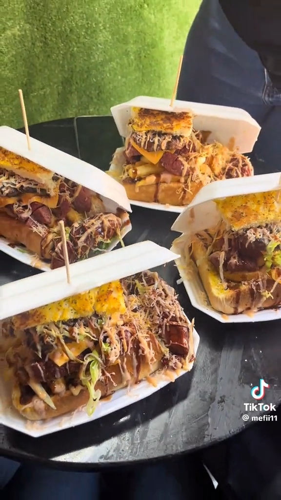
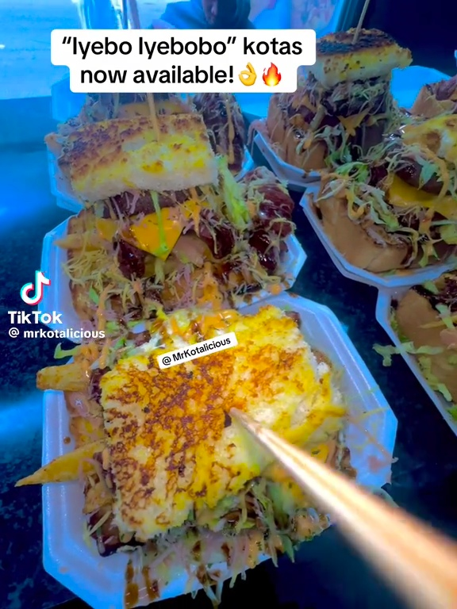
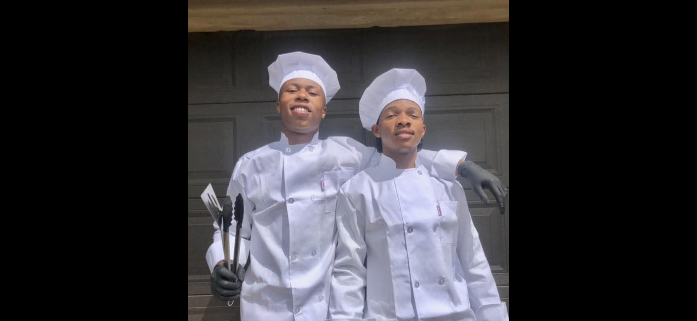

Our Story
Established as a registered South African fast-food brand in 2022
Mr Kotalicious by RayTheChef is a popular culinary hot spot in Braamfontein, Johannesburg, specializing in affordable, gourmet, and traditional township-style street food. They are known for their massive, mouth-watering kotas (sphatlo).



The menu features everything from classic slap chips, wraps, and dagwoods to signature quarter-loaves loaded with russians, polony, melted cheese, eggs, atchar, and chakalaka. Highlighting their lineup are massive creations like the Papaya Bite, the Ribster Bite, and the legendary Mr Kotalicious Bite—packed with four beef patties, six viennas, and triple cheese.

The Chefs Behind the Flavor
At Mr Kotalicious, our kitchen team brings authentic township flavors to life with high-speed gourmet precision. From stacking giant multi-layered kotas packed with beef patties, viennas, and melted cheese to balancing rich sauces with classic atchar and chakalaka, our cooks ensure every single bite delivers unmatched quality and bold South African taste.
Our Mission
To deliver delicious, affordable meals while creating a warm and welcoming experience for every guest. Whether you're here for a quick bite or a family gathering, Kotalicious is your home for good food and good vibes. Also willing to reduce unemployment around Johannesburg and serve students with our best services they need.
Why Choose Us?
- We are close to Wits, Rosebank College and other tertiary campus
- Fresh ingredients daily
- Friendly service
- Unique recipes you won't find anywhere else
TO FIND US CLICK HERE👉: Contact Us.